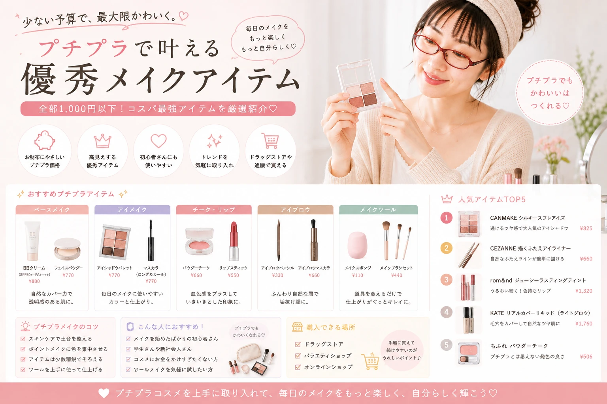
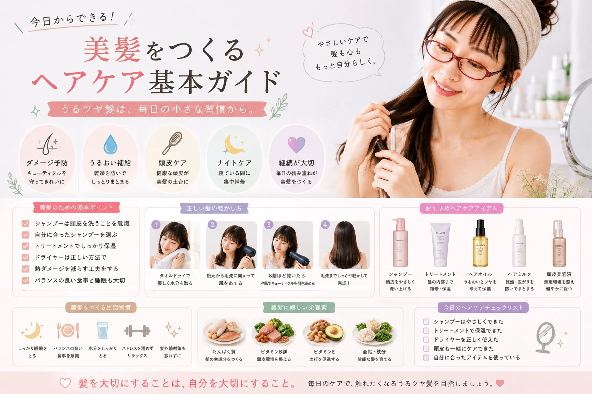
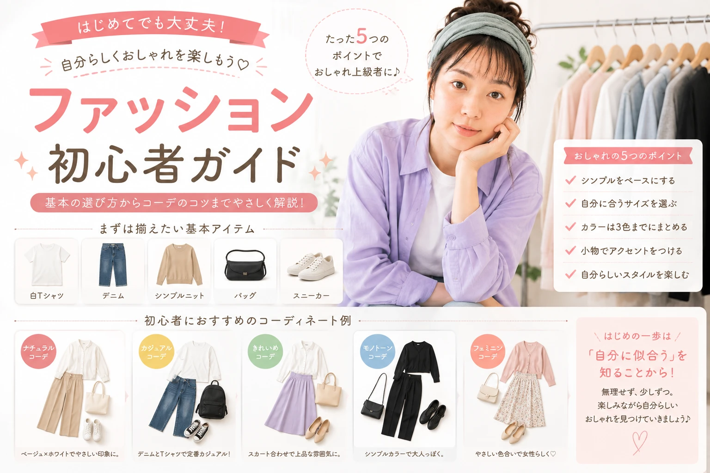
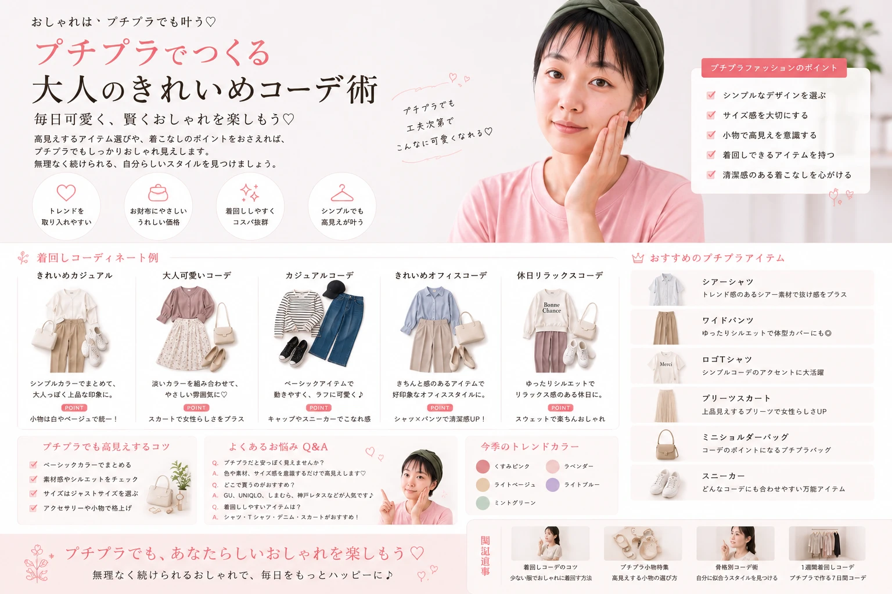

NEW ARTICLES
最新の記事


BODY CARE
ボディケアの記事
毎日のボディケアに役立つ、 初心者向けの記事をまとめています。

CATEGORY
カテゴリーから探す
BEAUTY
美容・メイクの記事
メイクやスキンケア、ヘアケアなど、 毎日の美容に取り入れやすい情報を紹介します。






ファッション
ファッション初心者ガイド｜ 少ない服でおしゃれに見せるコツ
何を着ればいいかわからない人へ。 色合わせやシルエットなど、 初心者でも取り入れやすいコーデの基本を紹介します。
続きを読む →
ファッション
プチプラファッション入門｜ 予算を抑えておしゃれを楽しむ方法
少ない予算でもおしゃれを楽しみたい人へ。 ベーシックアイテムを中心に、 コーディネートの考え方を紹介します。
続きを読む →
POPULAR
人気の記事
Pro Pocket Beautyで 特にチェックしておきたい美容記事をピックアップ。

SEARCH BLOG
記事を探す
気になるキーワードやカテゴリーから 美容記事を探せます。